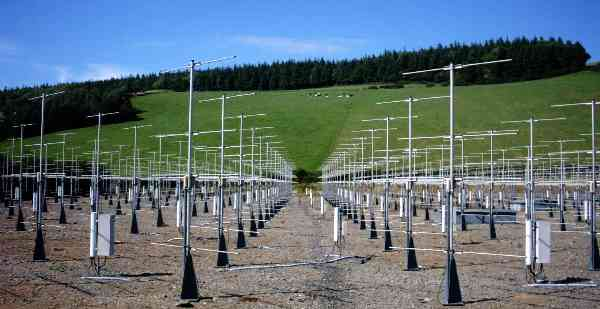

|

- Operating frequency/radar wavelength
- 46.5 MHz/6.45 m
- Peak transmitted power
- 160 kW (from 5 Tycho Technology WPT-50 transmitters)
- Transmitter pulse lengths, us (range resolutions, m)
- 1 (150), 2 (300), 4 (600), 8 (1200), 16 (2400), 32 (4800)
Complementary pulse coding available for 4 us and longer pulses
- Inter-pulse periods, us (maximum unambiguous ranges, km)
- 80 (12), 160 (24), 320 (48), 640 (96)
- Maximum duty cycle
- 5 %
- Antenna type
- 20 × 20 array of 4-element Yagis, 0.85 λ spacing
- Antenna dimensions
- 109.6 × 109.6 m
- Location of the antenna arrray
- Latitude 52.42°N, Longitude 4.01°W, 50 m above mean sea
level
British National Grid Reference SN 637 826
- Available beam pointing directions
- N4.2°, E4.2°, S4.2°, W4.2°
NE6°, SE6°, SW6°, NW6°,
N8.5°, E8.5°, S8.5°, W8.5°
NE12°, SE12°, SW12°, NW12°
where the actual azimuths are offset 17.5 °, anticlockwise
from the nominal directions
- Minimum coherent integration time
- 81.92 ms
- Avaialble discrete Fourier transform lengths
- 64, 128, 256, 512
Internal Links:
- Return to the top of the page
- Available beam pointing directions
- Guidelines for operation of the NERC
MST Radar
- Access to the data
- Access to quick-look plots
|